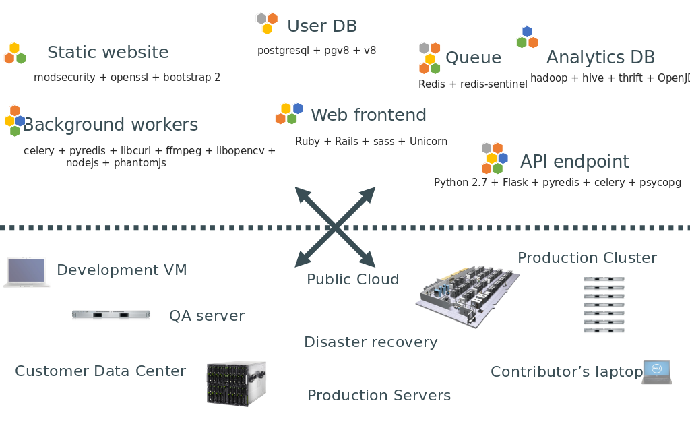
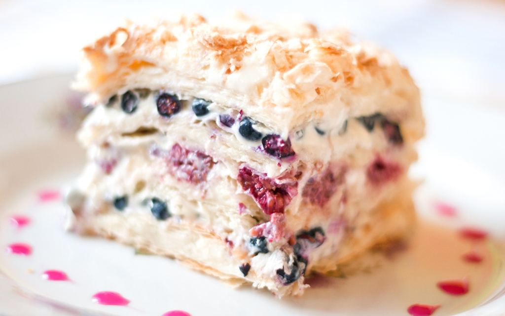
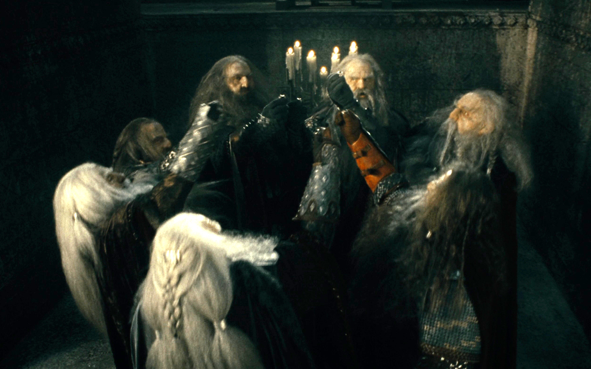

Платформа для разработки, доставки и эксплуатации приложений.
Проект с открытым исходным кодом, который позволяет легко создавать переносимые самодостаточные контейнеры из
любого приложения.
Для чего нужен Docker?
Создание среды для разработки
Простая установка приложений
Возможность содержать инфраструктуру как код
Объектно-ориентированный дизайн для инфраструктуры
Деплой приложений
Среда для тестирования
Параллелизация тестирования
Микросервисы
Контейнеры?

Что такое контейнеры?
Изолированная файловая система
Изолированные процессы
Дешевая виртуализация
Структура Docker
Сервер: Docker daemon
Клиент: Docker client
Хранилище: Registry, DockerHub
Сервер
Прием команд от клиента, сборка и скачивание образов, создание и супервайзинг контейнеров.
Образы (images)
Контейнеры (containers)
Что такое docker-образ?
Стоит разделять две сущности: образ и контейнер.
Образ это упакованное приложение
Образ собирается по сценарию или скачивается из хранилища
Образ состоит из слоев
Контейнер создается из образа
Контейнер доступен только на чтение
Контейнер существует только пока внутри него существует процесс

Отличие от виртуализации
В отличии от систем виртуализации, докер не поднимает новую операционную систему, а абстрагирует процессы
на запущенной linux-хост системе. Мгновенная загрузка приложений достигается за счет отсутствия оверхеда на
загрузку гостевой системы. По той же причине докер-образы занимают меньше памяти на диске.
Клиент
Отправка команд серверу.
docker build
docker pull
docker run
docker ps
Хранилище образов
DockerHub - сервис. Общедоступные образы вендоров, бесплатно для открытых проектов, платно для закрытых.
Registry - open source приложение. Собственное хранилище.
Образы можно экспортировать в файл, хранить и передавать любым удобным способом.
Связь контейнера с внешней средой
Проброс портов
Возможность примонтировать отдельный файл
Возможность примонтировать директорию
Возможность примонтировать данные другого контейнера
Возможность примонтировать отдельный контейнер с данными
Возможность примонтировать именованный кусок файловой системы
Внешние директории/файлы называются volumes.
Dockerfile. Создание образа
FROM ubuntu:14.04RUN apt-get updateRUN apt-get install -y --force-yes nginxEXPOSE 80
docker build . -t nginx
Создание контейнера из образа
docker run -d \-v $PWD:/usr/share/nginx/html \-p 81:80 --name=nginx \nginx

Один контейнер один сервис
Старайтесь разделять приложение по сервисам между контейнерами
Это повысит отказоустойчивость, переиспользуемость и удобство работы
Docker compose
Отдельная утилита
Конфигурация, запуск и взаимодействие нескольких контейнеров
Проще чем описывать все команды вручную
Запуск всей инфраструктуры одной простой командой
Создание рабочего окружения
Описание нужных зависимостей в docker-compose
Подключение локальной директории с кодом
Запуск docker-compose up
Передача конфигурации коллегам
Деплой
На сервере должен работать docker daemon.
Production сервер по команде запрашивает нужные образы из DockerHub или Registry и запускает контейнеры.
Build сервер доставляет нужные контейнеры на production, который их затем запускает.
CI / CD
Воспроизведение production окружения
Изолирование процессов тестирования
Откат изменений
Параллельный запуск тестов
Какие минусы у Docker?
Незнакомая технология
Только для Linux (cgroups)
Vendor Lock-In
У нас монолит!
Вопросы
Не слушай их, Лила. Люди говорили, что я тупой, но я им доказал!